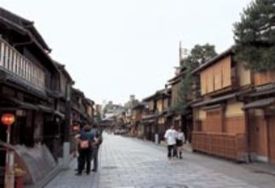

El Distrito Gion se ha desarrollado a lo largo de la carretera que va al Monasterio Yasaka. En el siglo XVII, un gran número de personas comenzó a venir a este lugar, atraídos por las obras de teatro y las actuaciones de marionetas joruri, representadas teatralmente en locales muy pequeños. Posteriormente, Gion se ha convertido en uno de los distritos de ocio más conocidos de Japón y continúa manteniendo su prestigio. Venga y pasee por los bulevares de Gion, recorriendo diferentes empresas a la antigua usanza que permanecen aún desde los tiempos dorados de Kioto. A veces, verá paseando y luciendo kimonos coloridos a maikos (bailarinas).
Atras